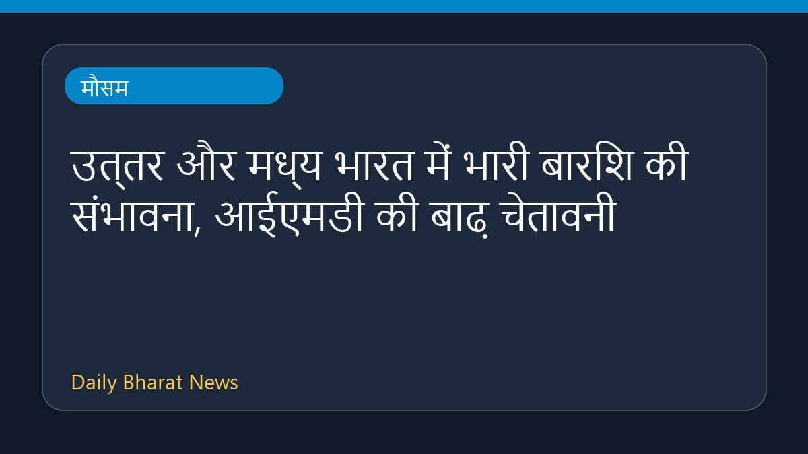

उत्तर और मध्य भारत में भारी बारिश की संभावना, आईएमडी की बाढ़ चेतावनी

भारत मौसम विज्ञान विभाग (IMD) ने उत्तर और मध्य भारत के क्षेत्रों में भारी बारिश होने की संभावना जताई है। स्थिति को देखते हुए मौसम विभाग द्वारा बाढ़ की चेतावनी भी जारी की गई है। इस संबंध में बिजनेस स्टैंडर्ड की रिपोर्ट में जानकारी दी गई है कि इन क्षेत्रों में जलभराव और बाढ़ जैसी स्थिति उत्पन्न हो सकती है। हालांकि, इस खबर में उपलब्ध विवरण अभी बहुत सीमित हैं और विस्तृत जानकारी का इंतजार है।
मूल स्रोत: Weather News Sources
Heavy rain likely across north, central India; IMD issues flood warning - Business Standard ↗
Heavy rain likely across north, central India; IMD issues flood warning - Business Standard ↗